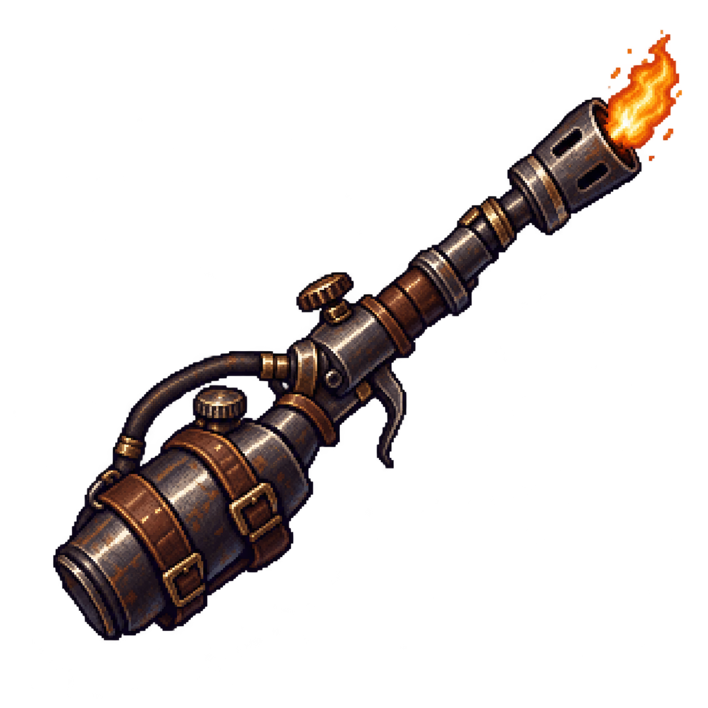
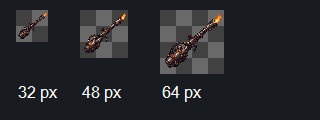
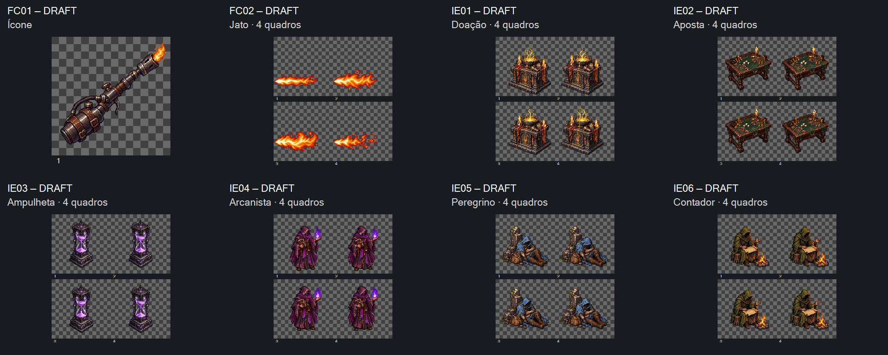

FC01 v01 — Ícone do lança-chamas
Fonte estática DRAFT, sem aprovação de mecânica


Prévia reduzida bruta, sem novo desenho nem normalização do original. Em32px os detalhes diminuem; avaliar reconhecimento.

Uma revisão conjunta para quando voltar: ícone e jato de lança-chamas, doação, aposta, ampulheta, arcanista, peregrino e contador. Uma fonte estática e sete ciclos de quatro quadros. Todas as fontes nativas têm1254×1254; folhas2×2 com células627×627. Não recortar como512×512.
Manifesto · Medições e hashes · Prompts usados · Entrega local para Claude · Checagem dos controles
Retenção técnica FC02: v03 separa as quatro chamas e aproxima o alcance, mas a origem não fica na borda esquerda/meia altura. Precisa de registro antes de uso. Doação e arcanista ainda deslocam a base50/51px; outros idles também têm pendências de ancoragem. Alfa dos sólidos, margens e continuidade fina requerem preparação. Nenhuma admissão em jogo.

Fonte estática DRAFT, sem aprovação de mecânica

Prévia reduzida bruta, sem novo desenho nem normalização do original. Em32px os detalhes diminuem; avaliar reconhecimento.

Os ciclos repetem por padrão; pausa, quadro manual e reinício permitem comparar a continuidade.8FPS inicial é inspeção, sem decisão de runtime. Recortes brutos expõem deslocamentos; nenhuma correção oculta foi aplicada às fontes. Preparação e implementação com Claude, sem envio automático a outro chat.
Checkpoint visual concluído em16/10/2026: oito fontes aceitas pelo dono. A retenção técnica FC02 e a preparação dos idles permanecem pendentes. Lógica verificada em DOM offline; render real do navegador e jogo não verificados. Nenhum playtest realizado.